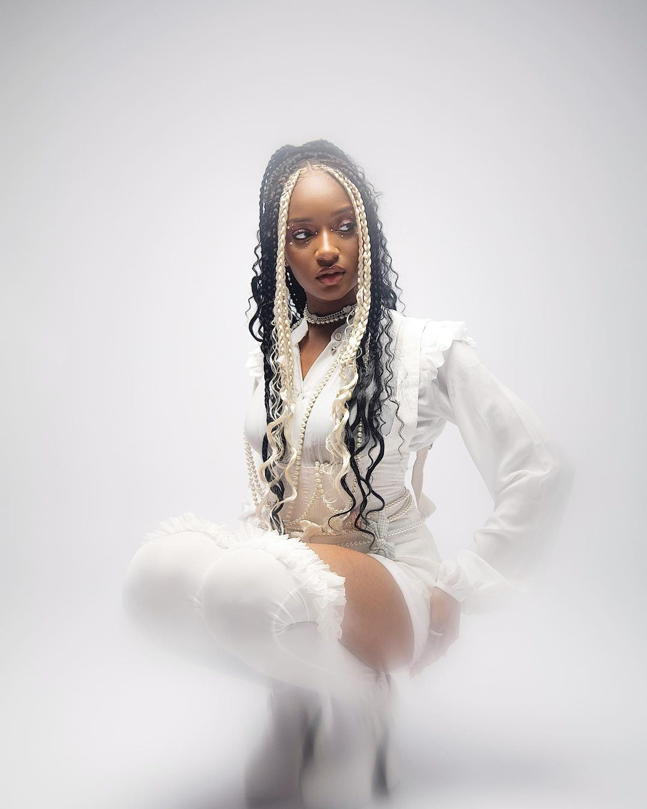

Congratulation Meet Your Match!!
Portable, born on March 12, 1994, in Abeokuta, Ogun State, Nigeria, is a Nigerian musician who gained mainstream recognition through his hit single "ZaZoo Zehh." He grew up in Abeokuta but later moved to Sango-Ota, a city in Ogun State near Lagos. His rise in the music industry has been attributed to his unique style and viral hits
Congratulation Meet Your Match!!
Megan Thee Stallion is an American rapper, singer, and songwriter who rose to prominence in the 2010s as part of a growing cohort of women in hip-hop. She became the first female rapper signed to 300 Entertainment in 2018. Her breakout single, “Big Ole Freak,” was notable for being the first of her tracks to reach the Billboard Hot 100, peaking at a notable position. Megan is recognized for her bold lyrics and has made history by performing at prestigious events, solidifying her influence in the music industry.
Congratulation Meet Your Match!!
James Chukwueze Obialor, widely known as James Brown, is a Nigerian internet personality, dancer, and cross-dresser, born on February 22, 1999. His rise to fame began when he gained significant attention after being arrested by the Nigerian police for alleged homosexuality, an accusation he denied. Brown's unique style and presence on social media have made him a prominent figure in Nigerian pop culture, where he actively engages his audience through various content, including dancing and acting. He has also positioned himself as a brand influencer, showcasing his versatility and creativity in entertainment
Congratulation Meet Your Match!!
Temilade Openiyi, known professionally as Tems, was born on June 11, 1995, in Lagos, Nigeria. She began her musical journey singing in her church choir and gained recognition for her talent in 2009. In early 2018, inspired by a message from her daily devotional, she decided to leave her job as a digital marketer to pursue music full-time. Tems has since established herself as a prominent singer and songwriter in Nigeria, known for her unique sound and contributions to the music industry.
Congratulation Meet Your Match!!
Davido, a prominent Nigerian musician, was born on November 21 1992 in Atlanta, which makes him 31 years old as of now. United States, but he was raised in Lagos, Nigeria. He made his music debut as part of the group KB International. Davido later pursued a successful solo career, becoming one of Africa's biggest music stars. He studied business administration at Oakwood University in the U.S. and is known for blending Afrobeats with various music genres, gaining international recognition
Congratulation Meet Your Match!!

WurlD,whose real name is Sadiq Onifade,was born 37 years 2 January 1987 in Lagos Nigeria, later moved to Atlanta, Georgia, to pursue music and education. He is known for his unique electro-fusion music style, blending elements of different genres. While residing in the US, he became a prolific songwriter, creating music for various artists and making a name for himself in the Atlanta music scene. His background in Mushin, Lagos, placed him at the heart of vibrant Nollywood culture, influencing his artistic expression.
Congratulation Meet Your Match!!
Oyinkansola Sarah Aderibigbe (born 14 June 2002), known professionally as Ayra Starr, is a Nigerian singer and songwriter.In early 2021, Starr achieved mainstream recognition with her eponymous debut extended play and its hit track "Away", which spent two consecutive weeks at number four on Nigeria's TurnTable Top 50 chart; the song also peaked at number 17 on the Billboard Top Triller Global chart, paving the way for the release of her first full-length album, 19 & Dangerous (2021). Categorized mainly as Afropop and R&B, the mixtape received favorable critical reception and spawned two top forty hits in Nigeria.